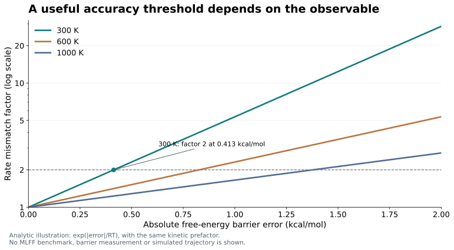

머신러닝 포스필드: 원자 사이의 힘에서 물질의 성질까지
분자동역학의 기초에서 모델의 표현·학습 데이터·정확도와 계산 비용의 선택까지

내용 살펴보기
1. 원자들의 움직임으로 물질을 예측한다
배터리 안에서 이온은 어떤 길로 이동할까. 단백질에 다가간 약물 분자는 어떤 배치를 오래 유지할까. 촉매 표면에서는 어떤 결합이 먼저 끊어질까. 서로 다른 질문의 밑바닥에는 원자들의 배치와 움직임이 있다. 원자들이 서로 밀고 당기는 법을 계산할 수 있다면, 눈으로 직접 보기 어려운 과정에서 어떤 구조와 경로가 가능한지 살펴볼 수 있다.
분자동역학(molecular dynamics, MD)은 그 움직임을 계산하는 방법이다. 1964년 Rahman은 Lennard-Jones 상호작용을 사용하는 864개 원자의 액체 아르곤을 계산했다. [1] 오늘날에는 단백질·전해질·금속·고분자까지 대상이 넓어졌다. 그때나 지금이나 원자의 위치를 다음 위치로 옮기려면 현재 배치에서 각 원자가 받는 힘을 알아야 한다. 그 힘을 제공하는 상호작용 모형이 포스필드(force field)다.
머신러닝 포스필드(MLFF)는 원자 배치와 에너지·힘 사이의 관계를 데이터에서 배운다. 정밀한 전자계산을 매 순간 다시 수행하는 부담을 줄이면서 복잡한 환경 의존성을 표현하려는 접근이다. 이 가능성을 이해하려면 먼저 에너지 함수가 무엇을 나타내고, 그 기울기가 어떻게 힘이 되며, 힘을 반복 계산하면 어떻게 물성이 나오는지 따라가 볼 필요가 있다. 모델의 구조와 학습 데이터, 실제 검증은 그 다음에 연결된다.
2. 원자 배치를 상호작용 에너지로 기술한다
N개 원자핵의 좌표를 R=(R₁,…,Rₙ)라고 쓰자. 퍼텐셜 에너지 U(R)는 그 전체 배치에 대응하는 수 하나다. 모든 원자의 위치를 움직이면 이 값도 달라진다. 이렇게 가능한 배치마다 에너지를 정한 함수를 퍼텐셜 에너지 표면(potential-energy surface, PES)이라고 한다. 그림에서 굽이진 면으로 그릴 때는 많은 좌표 중 일부를 골라 투영한 것이다. 한 점이 전체 배치를 나타내므로, 원자 하나가 실제 공간의 언덕 위를 굴러가는 그림과는 의미가 다르다.
생체분자의 분자역학에서는 결합 길이, 결합각, 비틀림각과 비결합 상호작용으로 에너지를 나누는 형태를 흔히 사용한다. 다음은 그 대표적인 표현이다. [2]
| 항과 예시 | 어떤 변화를 기술하는가 | 매개변수의 의미 |
|---|---|---|
| 결합: ½kᵦ(r−r₀)² | 지정한 두 원자 사이 결합 길이의 늘어남 | r₀는 평형 길이, kᵦ는 에너지/길이² 단위의 강성이다. |
| 각도: ½kₐ(α−α₀)² | 세 원자가 만드는 각도의 굽힘 | α₀는 평형 각도다. 각도를 라디안으로 쓸 때 kₐ의 단위도 맞춘다. |
| 비틀림: Σₙ Vₙ[1+cos(nφ−δₙ)] | 네 원자의 이면각에 따른 회전 장벽 | Vₙ은 에너지 크기, n은 주기 수, δₙ은 위상이다. |
| 비결합: Uᴸᴶ(rᵢⱼ)+kₑqᵢqⱼ/rᵢⱼ | 원자 사이의 반발·분산과 정전기 | qᵢ는 부분 전하, kₑ는 단위계에 따른 쿨롱 계수다. 모든 쌍을 무조건 중복 합산하지 않는다. |
모형의 함수 형태를 정한 다음, 원자 유형과 화학적 환경별 매개변수를 양자화학·실험 자료에 맞춘다. 같은 조화 결합이라도 ½k(r−r₀)²와 k′(r−r₀)²는 계수 정의가 다르다. 비결합 항에서 제외할 결합 쌍과 1–4 상호작용의 배율, 물·이온 모형의 조합도 선택한 포스필드의 일부다. 매개변수 파일을 바꾸거나 섞는 일은 기호 몇 개를 바꾸는 것보다 더 큰 물리적 선택이 된다.
![U^{\mathrm{LJ}}(r)=4\epsilon\left[\left(\frac{\sigma}{r}\right)^{12}-\left(\frac{\sigma}{r}\right)^6\right]](math_b0c4a359dbb705.svg)
Lennard-Jones(LJ) 포텐셜에서는 가까운 거리의 가파른 반발과 먼 거리의 인력을 두 항으로 표현한다. ε는 에너지 우물의 깊이이고, σ는 에너지가 0을 지나는 거리다. 최소 에너지의 거리는 2^(1/6)σ이며 그때 U=−ε다. r⁻⁶ 항은 적절한 중성 원자쌍의 먼 거리 분산력 형태를 담지만, r⁻¹² 반발은 편리한 경험적 근사다. 방향성을 가진 공유결합 전체를 이 한 쌍 함수로 표현할 수는 없다. [3]
경험적 모형도 오래전부터 주변 환경의 영향을 기술해 왔다. EAM은 금속 원자 주변의 밀도에 의존하는 embedding 에너지를 넣고, Tersoff는 이웃과 결합각에 따라 유효 결합 세기를 바꾼다. [4,5] 반응형·분극형 경험적 포스필드도 있다. MLFF의 등장을 단순 쌍 상호작용에서 처음으로 복잡한 물리로 넘어온 사건이라고 설명하면 이 발전을 놓친다. 변화의 중심은 상호작용 함수와 그 표현을 데이터로부터 훨씬 유연하게 정할 수 있다는 데 있다.
3. 에너지의 기울기에서 MD의 한 단계로

에너지의 좌표 미분에 음의 부호를 붙이면 각 원자가 받는 힘이 된다. 에너지는 배치 하나에 대응하는 스칼라인 반면 힘은 원자마다 방향과 크기를 가진 벡터다. 원자 i에서 r이 증가하는 방향을 양으로 잡으면 LJ 쌍의 힘은 다음과 같다.
![f_r(r)=-\frac{dU^{\mathrm{LJ}}}{dr}=\frac{24\epsilon}{r}\left[2\left(\frac{\sigma}{r}\right)^{12}-\left(\frac{\sigma}{r}\right)^6\right]](math_db649bdf78f869.svg)
r<2^(1/6)σ에서는 두 원자를 떼어 놓는 반발력이, 그보다 먼 거리에서는 끌어당기는 힘이 생긴다. σ에서 에너지가 0이어도 힘은 24ε/σ로 0이 아니다. 힘을 정하는 것은 에너지의 절댓값이 아니라 기울기이기 때문이다. 그림 1의 오른쪽 확대창은 작게 보이는 인력 영역을 따로 보여 준다.

코드에서는 두 원자의 차이 dᵢⱼ=Rᵢ−Rⱼ와 거리 r=|dᵢⱼ|를 구하고, 원자 i에 fᵣdᵢⱼ/r를 더하며 원자 j에는 그 반대 힘을 더한다. 다체 포텐셜에서는 여러 원자 환경에 의존하는 에너지의 모든 좌표 의존성을 미분해야 한다. ML 에너지 모형의 자동미분도 이 계산을 한다. 한 원자의 힘을 그 원자에게 배정한 에너지 항 하나의 미분만으로 계산할 수 있는 것은 아니다.
MD 적분기는 이 힘과 질량으로 위치와 속도를 전진시킨다. velocity Verlet의 한 단계는 속도를 반 단계 움직이고, 그 속도로 위치를 갱신한 다음, 새 전체 배치에서 힘을 다시 구해 속도의 나머지 반 단계를 움직인다. [6]
그림 2에서는 같은 질량의 LJ 두 입자를 평형보다 멀리 놓고 정지 상태에서 출발시켰다. 인력이 입자들을 가속하고, 입자들은 에너지 최소점을 지나 더 가까워졌다가 반발력에 의해 다시 멀어진다. 운동에너지와 퍼텐셜에너지는 바뀌지만 두 에너지의 합은 작은 적분 오차 안에서 유지된다. MD는 에너지 최소화와 달리 속도와 관성을 가진 시간 변화를 계산한다.

큰 시스템에서는 매번 모든 원자쌍을 검색하는 부담을 줄이기 위해 cutoff와 여유 폭을 둔 이웃 목록을 갱신한다. [7] 주기 경계에서의 장거리 정전기는 PME 같은 별도 합산과 결합한다. [8] 에너지에 switching 함수를 곱했다면 그 함수의 미분도 힘에 포함해야 한다. timestep, 단위계, 경계조건, thermostat·barostat 선택은 MLFF를 사용해도 남는 구현 조건이다. NVT에서는 열저장고와 에너지를 교환하므로 고립계의 K+U 보존 검사를 그대로 적용하지 않는다.
4. 계산해야 할 에너지 함수를 학습한다
전자구조 계산은 주어진 원자 배치에서 선택한 전자 상태의 에너지와 힘을 구한다. DFT의 실제 결과는 교환·상관 범함수, 기저와 의사퍼텐셜, 전하·스핀 상태, 분산·상대론적 처리와 수렴 설정에 의존한다. [9] 이를 MD의 매 단계에서 반복하는 Born-Oppenheimer 방식은 유연한 화학을 기술할 수 있지만 비용이 크다. 1 fs 간격으로 1 μs를 계산하려면 10억 번의 힘 평가가 필요하다.
MLFF는 대표 구조에서 미리 구한 에너지·힘을 사용해 대리 함수를 맞춘다. 전형적인 국소 에너지 모형은 원자 i의 주변 배치를 기술자 Dᵢ로 바꾸고, 원자 기여 eθ(Dᵢ)를 합한다. [10] θ는 학습한 계수나 신경망 가중치다. 원자 기여는 전체 에너지를 표현하기 위한 내부 분해이며, 각 원자의 에너지를 실험적으로 따로 측정해 정답으로 준다는 뜻은 아니다.
Uexplicit는 선택한 장거리 정전기·분산·단거리 반발 등의 명시적 항이다. 모든 모델이 이 분해나 모든 항을 사용하는 것은 아니다. 원자 배치를 평행이동·회전하거나 같은 원소의 번호만 바꾸었을 때 에너지는 같아야 한다. 힘 벡터는 배치와 함께 회전해야 한다. 이런 대칭을 모형에 넣으면 학습할 불필요한 차이를 줄일 수 있다. 방향을 가진 내부 정보를 유지하는 등변(equivariant) 모형은 이 조건을 만족시키면서 각도 의존성을 학습하는 방법이다. [11]
에너지와 힘 레이블을 함께 맞추는 학습은 다음과 같은 목적함수로 설명할 수 있다. MSE는 선택한 구조와 성분에 대한 평균제곱오차이며, W는 구현에서 정의한 응력 또는 비리얼이다. 아래 식은 여러 방법에 공통된 개념을 보여 주는 예시다.
실제 학습에서는 에너지를 원자 수로 나눌지, 힘을 3N 성분에 대해 평균할지, 빠진 레이블을 어떻게 제외할지 정한다. wE·wF·wW의 수치와 단위, 자료 소스별 가중치가 어떤 타협을 학습할지 바꾼다. θ는 이 목적함수를 줄이도록 갱신되고, 새 배치에서는 학습 때의 전자계산을 다시 하지 않고 Uθ와 그 미분을 계산한다. 높은 표현력, 반복 사용과 전이 학습이 MLFF의 실질적인 장점이다. 데이터에 없는 물리와 배치에서의 정확도는 별도 검증 사항이다.
통상적인 ML 기반 MD와 Born-Oppenheimer MD는 원자핵의 운동을 고전적으로 진행한다. 전자의 양자역학을 반영한 에너지면을 배웠다는 것과 핵의 영점 운동·터널링까지 기술한다는 것은 구분해야 한다. 핵 양자효과가 중요한 문제는 경로적분 등의 별도 처리를 선택하며, 평형 핵 양자통계와 실시간 양자 동역학에도 서로 다른 근사가 들어간다. [12,13]

5. 표현 방식과 학습 범위에 따라 달라지는 모델
MLFF를 고를 때에는 먼저 배치를 어떤 정보로 표현하고 그 정보로 에너지를 어떻게 만드는지 살펴볼 수 있다. 같은 계열 안에서도 데이터·cutoff·모델 크기를 바꾸면 정확도와 비용이 달라진다. 다음 표는 대표적인 설계 원리를 비교한 것으로 성능 순위가 아니다.
| 설계와 대표 모델 | 무엇을 학습하는가 | 장점과 적용 조건 |
|---|---|---|
| 커널: GAP·sGDML | GAP는 국소 원자 환경 사이의 유사도로 회귀한다. sGDML은 특정 분자의 전체 힘을 보존적으로 학습한다. [14,12] | 물리 대칭과 회귀 구조를 이용해 비싼 기준 자료를 효율적으로 활용할 수 있다. 대표 환경의 수와 학습 영역이 비용·전이를 정하며 두 모델의 공간 분해는 다르다. |
| 대칭 기술자+신경망: Behler–Parrinello·ANI | 거리·각도에 기반한 불변 기술자에서 원자 신경망의 가중치를 맞추고 원자 기여를 합한다. [10,15] | 고정된 네트워크로 새 배치를 평가한다. 표현 범위는 기술자·cutoff·원소와 학습 환경에 의존한다. 초기 ANI-1의 H/C/N/O 범위를 모든 ANI 판본의 범위로 일반화하지 않는다. |
| 다체 기저 전개: ACE | 원자 환경을 대칭을 만족하는 기저로 전개한다. 고정 기저의 선형 에너지 모형은 계수 회귀로 맞출 수 있다. [16] | 차수·기저 수를 바꾸어 표현력과 비용을 조절한다. ACE 전체가 선형 모형인 것은 아니며 비선형 구성도 가능하다. |
| 등변 그래프 신경망: NequIP·MACE | 원자와 이웃을 그래프로 만들고 방향 정보를 포함한 특성을 갱신한다. MACE는 고차 다체 메시지를 구성한다. [11,17] | 복잡한 각도·환경 의존성을 학습한다. 채널·각도 차수·층·이웃 수가 메모리와 비용을 바꾼다. 유한한 수용 범위와 올바른 장거리 점근형은 별도 문제다. |
학습 전략과 물리 항의 선택은 이 표에 겹치는 또 다른 구분이다. CHGNet이나 MACE-MP 같은 사전학습 포텐셜은 넓은 자료에서 얻은 가중치를 바로 사용하거나 새 계의 미세조정 출발점으로 쓴다. [18,19] 사전학습 여부는 새로운 힘의 법칙이나 독립적인 신경망 구조를 뜻하지 않는다. 추론만 하는 경우와 새 레이블로 가중치를 다시 맞추는 경우, 처음부터 학습하는 경우를 구분해야 한다.
PhysNet과 SO3LR Tauri는 학습된 에너지·환경 의존 성질과 명시적 정전기·분산 등을 결합하는 방향을 보여 준다. [20,21] 장거리 항이 있으면 그래프 cutoff 밖의 선택한 상호작용을 계산할 수 있지만, 그 항의 형태와 전하·분극 가정은 여전히 중요하다. 사전학습, 등변성, 명시적 장거리 항은 한 모델에 함께 존재할 수 있다.
| 설정의 종류 | 예시 | 무엇을 결정하는가 |
|---|---|---|
| 학습되는 매개변수 | 커널·기저 계수, 신경망 가중치·원소 임베딩, 전하·분산 성질을 예측하는 출력층의 가중치 | 선택한 표현과 자료 안에서 맞춘 함수 θ |
| 표현·학습의 설정 | cutoff, 기저·다체·각도 차수, 층·채널 수, 정규화, 목적함수·자료 가중치 | 표현 가능한 범위, 학습의 타협과 계산량. 일부 기저 변수는 구현에 따라 학습할 수도 있다. |
| 레이블의 물리 기준 | 전자구조 방법, 기저, 전하·스핀, 분산 보정과 수렴 조건 | 모델이 무엇을 정답으로 배웠는가. 같은 구조라도 기준을 바꾸면 다른 문제다. |
모델 이름만으로 이 세 설정을 알 수는 없다. MACE라는 구조 이름과 MACE-MP라는 학습 자료·체크포인트를 구별하고, 선택한 판본·학습 기준과 단위를 기록해야 한다. 응용 계의 데이터가 적다면 관련 사전학습 모형을 검증하고 미세조정할 수 있고, 지원하지 않는 화학이나 다른 전자구조 기준이 필요하면 좁은 계에 맞춘 모형을 처음부터 학습하는 선택도 가능하다. 어느 쪽이 유리한지는 같은 목표와 검증 자료에서 비교한다.
6. 학습 데이터가 정하는 화학과 조건
표현력이 충분해도 배워야 할 배치가 자료에 없으면 문제가 남는다. 원소뿐 아니라 결합·배위, 전하·스핀, 압축과 열적 변형, 용매와 이온, 반응 경로가 필요한 범위에 있는지 본다. 에너지·힘·응력 중 실제로 학습한 레이블과 기준 계산의 정확도도 확인한다. SO3LR Tauri는 2026년 11월 4일 공개된 프리프린트이며 이 선택이 실제로 어떻게 이루어지는지 살펴볼 수 있는 사례다.
Tauri 데이터 공개본은 약 1.49억 건을 집계하지만, 재사용한 중성 물 구조 약 69만 건을 두 번 센다. 따라서 이 집계는 고유 구조 수와 다르다. 서로 다른 전자구조 수준의 레이블을 단계적으로 함께 사용하며, 최종 생산 모델도 하나의 순수한 DFT 기준을 그대로 복제한 모델로 볼 수 없다. 에너지와 힘이 어느 자료에서 왔는지, 소스별 샘플링 가중치가 무엇인지까지 공개본에서 확인할 수 있다. [22]
| 자료 | 담고 있는 화학과 레이블 | 해석할 때의 조건 |
|---|---|---|
| QCML | 작은 분자와 변형 구조. PBE0+MBD-NL 에너지·힘과 전자적 성질 | 원소 수가 많아도 원소 조합·큰 분자의 접힘·다양한 고스핀 상태를 균일하게 다루지는 않는다. [23] |
| QCell | 지질·당·핵산·이온 등의 생체분자 단편. PBE0+MBD(-NL) | 큰 생체분자에서 되풀이되는 국소 환경을 보강한다. 단편을 모았다는 사실이 전체 단백질의 평형 분포를 검증한 것은 아니다. [24] |
| OMol25-0·OPoly26 | 다양한 전하·금속·반응 환경과 고분자 단편. ωB97M-V 힘 레이블 | Tauri에서는 이 두 소스의 에너지를 학습에 섞지 않는다. 원소·전하·변형 구조의 포함 여부와 판본을 따로 확인한다. [22,25,26] |
같은 구조를 사용해도 레이블이 같다는 뜻은 아니다. 예를 들어 원래 SPICE의 주된 전자구조 기준은 ωB97M-D3(BJ)이지만, Tauri에 들어간 SPICE dipeptide 구조는 PBE0+MBD로 다시 계산됐다. [22,27] 데이터셋 이름만으로 학습 기준을 추정하면 이런 차이를 놓친다.
테스트 분할도 목적에 맞게 읽어야 한다. Tauri의 일부 내부 자료는 구조를 무작위로 섞어 분리하지만, 보고된 OMol·OPoly 힘 평가는 원래 자료의 원자 조성 분리 validation을 사용한다. [22,25,26] 다만 조성이 다른 분자에서의 전이, 새로운 온도·상·반응 경로에서의 전이, 긴 궤적의 안정성은 각각 다른 시험이다.
생체분자 중심 데이터와 결정 중심 데이터도 교환 가능한 범용 자원이 아니다. SPICE/Nutmeg는 약물 유사 분자와 펩타이드의 실온 구조를 주된 대상으로 삼으며, Nutmeg는 화학 반응을 목표로 하지 않는다. [27] CHGNet의 MPtrj는 무기 결정의 DFT 이완 경로를 바탕으로 하며 material-id별로 분할한다. [18] 분자 수용액에서 좋은 모델과 결정의 상안정성·결함에서 좋은 모델이 같을 이유는 없다.
7. 물질과 질문에 따라 달라지는 응용
물질과 화학에서 포스필드는 구조 최적화, 진동·탄성, 결함 이동과 열·이온 수송을 계산하는 데 쓰인다. 분자화학에서는 배치와 분광·반응 경로가, 액체와 전해질에서는 용매화·이온쌍·확산이, 생체분자에서는 구조 분포·양성자화·결합이 관심 대상이 된다. 각각의 질문은 다른 상호작용과 표본추출을 요구한다.
빠른 국소 포텐셜은 이웃 원자 환경에서 에너지를 추정한다. 정해진 밀도와 cutoff에서 효율적이지만, 멀리 떨어진 전하나 집단적인 전자 응답이 중요한 문제에서는 적절한 장거리 처리가 필요하다. 비국소 전하 이동을 명시적으로 다루는 신경망 포텐셜은 이 차이를 모델 설계로 해결하려는 한 사례다. [28]
| 문제 | 필요한 물리와 확인할 성질 | 모델 선택의 방향 |
|---|---|---|
| 일정한 상의 공유결합 고체·차폐된 금속 | 결합, 변형, 결함과 진동. 표면·다른 상으로 나갈 때 재검증 | 그 범위에서 검증된 국소 ML 포텐셜이 효율적인 후보가 된다. |
| 전해질·단백질·전하를 띤 계면 | 장거리 정전기, 유전 응답, 이온쌍과 용매화 | 명시적 장거리 항과 전하·환경 응답을 살핀다. PME가 있다는 사실만으로 분극까지 완전해지는 것은 아니다. |
| 분자 결정·흡착·분자인식 | 분산력, 수소결합과 용매·분자 내부 상호작용의 경쟁 | 분산 항의 형태와 응집상 데이터, 상대 결합·용매화 자유에너지를 확인한다. |
| 결합의 생성·절단·양성자 이동 | 전하·스핀 상태, 전이상태와 경쟁 경로 | 반응 환경을 포함한 데이터와 장벽 검증이 필요하다. 고정 결합 토폴로지가 없다는 사실만으로 정확한 반응 속도가 보장되지는 않는다. |
Tauri는 신경망의 반국소 에너지에 단거리 반발, 환경에 따른 전하와 분산 항을 더한다. [21] 그러나 예측 전하의 합을 맞추는 것과 전하 평형을 전역적으로 푸는 것, 환경 의존 분산 계수와 명시적인 다체 분산, 전체 스핀 입력과 스핀 동역학은 구별해야 한다. 빛에 의한 들뜬상태나 비단열 전이가 목적이라면 한 전자 상태의 스칼라 포텐셜만으로 충분한지부터 검토해야 한다.
경험적 포스필드 역시 양자화학·실험 자료로 정교하게 조정되어 왔고, 분극형·반응형 모델도 있다. 결합 토폴로지가 유지되는 검증된 생체분자 문제에서 긴 시간의 표본추출이 중요하다면, 충분히 검증된 경험적 모델은 중요한 비교 기준이다. 목표 오차에 도달하는 총비용을 비교할 때 MLFF라는 분류 자체에 우선권을 줄 이유는 없다.
8. 필요한 정확도는 물성에서 역으로 정한다
Chemical accuracy라고 흔히 부르는 약 1 kcal/mol은 열화학에서 유래한 유용한 규모다. 모든 힘, 진동수, 반응 속도와 확산계수에 통용되는 인증선은 아니다. [12] 이 에너지는 하나의 반응이나 비교 상태 전체에 대해 약 43.36 meV에 해당한다. meV/atom으로 정규화한 전체 테스트 오차와 반응물·전이상태 사이의 에너지 차 오차는 그대로 비교할 수 없다.
반응 속도가 목표라면 허용오차는 훨씬 구체적으로 정할 수 있다. 전이상태이론에서 앞인자와 투과계수가 같다고 가정하면, 자유에너지 장벽 오차 δΔG‡가 속도에 미치는 영향은 다음과 같다.
![\frac{k_{\mathrm{ML}}}{k_{\mathrm{ref}}}=\exp\!\left[-\frac{\delta\Delta G^\ddagger}{RT}\right]](math_9ed846d8a7d4d0.svg)
R은 기체상수, T는 절대온도다. 300 K에서는 RT가 약 0.596 kcal/mol이므로, 자유에너지 장벽을 1 kcal/mol 높게 또는 낮게 예측하면 속도가 약 5.35배 차이 난다. 장벽 오차만으로 생기는 차이를 두 배 안에 두려면 약 0.413 kcal/mol 이내여야 한다. 이는 본 리뷰의 해석적 예시 계산이며, 평균 에너지 MAE로 실제 속도 오차를 환산한 결과가 아니다.

액체의 밀도가 목적이라면 평형 밀도와 온도·압력 의존성이, 이온 전도라면 확산·이온쌍·집단 수송의 상관이, 결정의 상전이라면 경쟁 상의 자유에너지 차가 필요하다. 생체분자의 결합이나 접힘에는 용매화와 여러 준안정 상태 사이의 상대 자유에너지 및 충분한 표본추출이 중요하다. 목표 물성과 조건을 정한 다음 에너지·힘·응력·반응 장벽의 어느 오차를 줄여야 하는지 역으로 정해야 한다. 이렇게 문제별로 받아들일 최소 정확도 기준과 허용오차를 정한다.
9. 힘을 잘 맞춘 뒤에도 검증할 것
Forces are not Enough 벤치마크는 낮은 테스트 힘 오차, 안정적인 궤적, 정확한 물성을 따로 확인해야 함을 보여 준다. Water-10k에서 힘 MAE가 더 낮은 GemNet-T보다 NequIP가 더 긴 안정 궤적을 만들었고, 안정성을 유지한 다른 모델도 확산을 잘 맞추지는 못했다. 이 물의 기준은 DFT가 아닌 flexible SPC/E 모델이다. 따라서 결과는 평가 지표 사이의 불일치를 보여 주며, DFT 기반 모델의 보편적 순위를 정하지 않는다. [29]
Tauri도 액체 물의 보정된 확산계수를 119 Ų/ns로 보고해 실험값 230과 차이를 보인다. 가장 큰 T-L 모델의 proline 촉매 aldol 경로에서 장벽 MAE는 2.9 kcal/mol이다. 이는 T-L 구조의 PBE0+MBD-NL 단일점 에너지와 비교한 전자 활성화 장벽이며, 앞의 속도 예시에 쓴 자유에너지 장벽과 다르다. [21] 구조·경로의 폭넓은 기술과 수송·정량적 속도의 정확도를 함께 보아야 한다. 저자들은 이러한 한계를 이미 명시한다.
순서 있게 적용하려면 다음 검증을 목적에 맞게 설계할 수 있다. 아래 절차는 원문의 실험을 독립 재현한 결과가 아니라, 선행연구와 이번 사례에서 도출한 계산 제안이다.
- 계산할 물성과 허용오차를 명시한다. 원소·전하·스핀, 상·농도·온도·압력·경계조건과 물성의 단위를 함께 적는다.
- 대표 구조와 어려운 구조를 별도로 골라 전자구조 기준부터 점검한다. 반응이면 반응물뿐 아니라 전이상태·경쟁 경로, 응집상이면 이온·용매·압축·변형 환경을 포함한다.
- 학습·검증을 분리하고 평균 오차와 큰 오차의 꼬리를 본다. 실제 배치 조건에서 에너지 차·힘·필요한 응력과 장벽을 검사한다.
- 짧은 NVE 계산으로 timestep·cutoff·장거리 정확도에 따른 drift를 확인하고, thermostat가 적분 문제를 가리지 않는지 본다. 보존되는 에너지와 정확한 포텐셜은 별개의 조건이다.
- 독립 궤적과 적절한 상관시간을 사용해 목표 물성의 불확실성을 구한다. 상자 크기·궤적 길이·자유에너지 창·핵 운동 처리에 대한 수렴을 필요한 범위에서 확인한다.
- 실패 원인을 나누어 보완한다. 빠진 환경은 표적 데이터와 재학습으로, 누락된 물리는 적절한 모형으로, 느린 전이는 표본추출 전략으로 다룬다. 수정 후 원래 영역과 새 영역을 다시 검증한다.
Active learning은 새로운 환경에서 기준 계산을 추가하는 비용을 줄이는 방법이다. FLARE는 불확실도가 커질 때 전자구조 계산을 호출해 갱신하는 구체적인 선례다. [30] 다만 불확실도는 기준 계산을 요청할 신호이지 정확도의 보증서가 아니다. 여러 모델이 분포 밖에서 함께 틀릴 수 있으므로 모델 사이의 일치도만으로 정확도를 확정할 수 없다.
10. 원자 수와 시간 척도를 함께 계산한다
계산 비용에는 기준 데이터 생성과 학습, 매 MD 단계의 힘 계산, 적분 간격, 반복 궤적과 자유에너지 표본추출이 함께 들어간다. 사전학습 모델을 재사용한다면 이미 집행된 학습비와 새 문제의 검증·미세조정·생산 비용을 구분해 예산을 잡을 수 있다. 국소 모델은 고정 밀도·cutoff에서 흔히 원자 수에 비례하지만, 장거리 PME의 FFT에는 대체로 N log N 비용이 들어간다. [8]
새 문제의 비용 ≈ 기준 계산 + 검증·미세조정 + (물리 시간/적분 간격) × 단계당 비용 + 반복·분석
Tauri의 중간 모델은 MI355X 288 GB에서 약 0.98 μs/atom/step을 보고한다. 주기적 물·PME·빠른 메모리 모드에서 JIT 컴파일을 제외한 수치다. 5만 원자와 1 fs를 가정한 환산은 약 1.8 ns/day다. 최대 8400만 원자 수용량은 긴 생체분자 궤적의 생산성과 구분해야 한다. [21]
예를 들어 1 fs로 1 μs를 적분하려면 10억 단계가 필요하다. 주어진 환산 속도를 유지한다고 단순 계산해도 1 μs에는 약 556 GPU일이 걸린다. 이는 물 벤치마크 수치를 유지한다는 가정의 산술 예시이며 실제 단백질의 실행 시간 예측은 아니다. 독립 반복, enhanced sampling의 여러 창, 경로적분의 여러 bead를 추가하면 필요한 계산도 달라진다.
속도를 비교할 때에는 GPU와 메모리, 원자 수·이웃 수, 정밀도, cutoff와 PME 설정, timestep, JIT·초기화 포함 여부를 맞추어야 한다. 더 빠른 모델이 목표 자유에너지의 편향을 키우거나 더 긴 궤적을 요구하면, 단계당 비용의 이점이 최종 답의 비용으로 이어지지 않을 수 있다. 비교 단위는 필요한 불확실성 안에서 원하는 물성을 얻는 데 드는 총비용이다.
11. 원자의 힘에서 원하는 답까지
에너지 함수를 선택하고, 그 기울기로 힘을 구하고, 힘으로 원자의 움직임을 전진시키는 과정은 경험적 포스필드와 많은 MLFF를 잇는 공통 구조다. MLFF는 이 가운데 복잡한 에너지 함수를 만들고 다시 사용하는 방법을 바꾸었다. 전자계산에서 배운 환경 의존성과 표현의 유연성은 더 많은 배치와 물질을 탐색할 기회를 제공한다.
그 기회를 계산 가능한 답으로 만들려면 질문을 구체화해야 한다. 반응 경로를 찾는 것과 속도를 맞추는 일, 단백질 구조를 잠시 유지하는 것과 접힘의 평형을 구하는 일은 필요한 자료·정확도·시간이 다르다. 관심 물성을 정하고 그 물리를 담을 수 있는 모델을 고른 다음, 독립 자료와 수렴하는 표본으로 검증한다. 이 순서를 따르면 포스필드의 종류와 크기, 데이터 생성과 계산 비용을 같은 과학적 목표 아래에서 비교할 수 있다.
참고문헌
- [1]A. Rahman, Correlations in the motion of atoms in liquid argon, Phys. Rev. 136, A405 (1964). doi:10.1103/PhysRev.136.A405
- [2]OpenMM contributors, Standard forces, OpenMM User Guide 8.6 (accessed 6 November 2026). https://docs.openmm.org/latest/userguide/theory/02_standard_forces.html
- [3]LAMMPS developers, pair_style lj/cut command, LAMMPS release 30Sep2026 (accessed 6 November 2026). https://docs.lammps.org/pair_lj.html
- [4]M. S. Daw and M. I. Baskes, Embedded-atom method: Derivation and application to impurities, surfaces, and other defects in metals, Phys. Rev. B 29, 6443 (1984). doi:10.1103/PhysRevB.29.6443
- [5]J. Tersoff, New empirical approach for the structure and energy of covalent systems, Phys. Rev. B 37, 6991 (1988). doi:10.1103/PhysRevB.37.6991
- [6]LAMMPS developers, How a timestep works, LAMMPS release 30Sep2026 (accessed 6 November 2026). https://docs.lammps.org/Developer_flow.html
- [7]LAMMPS developers, Neighbor lists, LAMMPS release 30Sep2026 (accessed 6 November 2026). https://docs.lammps.org/Developer_par_neigh.html
- [8]T. Darden, D. York, and L. Pedersen, Particle mesh Ewald: An N log(N) method for Ewald sums in large systems, J. Chem. Phys. 98, 10089 (1993). doi:10.1063/1.464397
- [9]W. Kohn and L. J. Sham, Self-consistent equations including exchange and correlation effects, Phys. Rev. 140, A1133 (1965). doi:10.1103/PhysRev.140.A1133
- [10]J. Behler and M. Parrinello, Generalized neural-network representation of high-dimensional potential-energy surfaces, Phys. Rev. Lett. 98, 146401 (2007). doi:10.1103/PhysRevLett.98.146401
- [11]S. Batzner, A. Musaelian, L. Sun, M. Geiger, J. P. Mailoa, M. Kornbluth, N. Molinari, T. E. Smidt, and B. Kozinsky, E(3)-equivariant graph neural networks for data-efficient and accurate interatomic potentials, Nat. Commun. 13, 2453 (2022). doi:10.1038/s41467-022-29939-5
- [12]S. Chmiela, H. E. Sauceda, K.-R. Müller, and A. Tkatchenko, Towards exact molecular dynamics simulations with machine-learned force fields, Nat. Commun. 9, 3887 (2018). doi:10.1038/s41467-018-06169-2
- [13]i-PI developers, Core features, i-PI documentation (accessed 6 November 2026). https://docs.ipi-code.org/features.html
- [14]A. P. Bartók, M. C. Payne, R. Kondor, and G. Csányi, Gaussian approximation potentials: The accuracy of quantum mechanics, without the electrons, Phys. Rev. Lett. 104, 136403 (2010). doi:10.1103/PhysRevLett.104.136403
- [15]J. S. Smith, O. Isayev, and A. E. Roitberg, ANI-1: An extensible neural network potential with DFT accuracy at force field computational cost, Chem. Sci. 8, 3192 (2017). doi:10.1039/C6SC05720A
- [16]R. Drautz, Atomic cluster expansion for accurate and transferable interatomic potentials, Phys. Rev. B 99, 014104 (2019). doi:10.1103/PhysRevB.99.014104
- [17]I. Batatia, D. P. Kovacs, G. Simm, C. Ortner, and G. Csanyi, MACE: Higher order equivariant message passing neural networks for fast and accurate force fields, Adv. Neural Inf. Process. Syst. 35, 11423 (2022). https://papers.neurips.cc/paper_files/paper/2022/hash/4a36c3c51af11ed9f34615b81edb5bbc-Abstract-Conference.html
- [18]B. Deng, P. Zhong, K. Jun, J. Riebesell, K. Han, C. J. Bartel, and G. Ceder, CHGNet as a pretrained universal neural network potential for charge-informed atomistic modelling, Nat. Mach. Intell. 5, 1031 (2023). doi:10.1038/s42256-023-00716-3
- [19]I. Batatia et al., A foundation model for atomistic materials chemistry, J. Chem. Phys. 163, 184110 (2025). doi:10.1063/5.0297006
- [20]O. T. Unke and M. Meuwly, PhysNet: A neural network for predicting energies, forces, dipole moments, and partial charges, J. Chem. Theory Comput. 15, 3678 (2019). doi:10.1021/acs.jctc.9b00181
- [21]A. Kabylda, F. N. Brünig, M. Gallegos, J. T. Frank, E. Moerman, O. T. Unke, S. Chmiela, K.-R. Müller, and A. Tkatchenko, SO3LR Tauri: Generally applicable force fields for reactive (bio)molecular simulations covering the periodic table, arXiv:2611.06237v1 (2026). https://arxiv.org/abs/2611.06237v1
- [22]A. Kabylda, F. Brünig, M. Gallegos González, T. Frank, E. Moerman, O. T. Unke, S. Chmiela, K.-R. Mueller, and A. Tkatchenko, Data for "SO3LR Tauri: Generally Applicable Force Fields for Reactive (Bio)Molecular Simulations Covering the Periodic Table", version 1.0.0, Zenodo (2026). doi:10.5281/zenodo.22920714
- [23]S. Ganscha, O. T. Unke, D. Ahlin, H. Maennel, S. Kashubin, and K.-R. Müller, The QCML dataset, quantum chemistry reference data from 33.5M DFT and 14.7B semi-empirical calculations, Sci. Data 12, 406 (2025). doi:10.1038/s41597-025-04720-7
- [24]A. Kabylda, S. Suárez-Dou, N. Davoine, F. N. Brünig, and A. Tkatchenko, QCell: Comprehensive quantum-mechanical dataset spanning diverse biomolecular fragments, AI Sci. 2, 025003 (2026). doi:10.1088/3050-287X/ae5267
- [25]D. S. Levine et al., The Open Molecules 2025 (OMol25) dataset, evaluations, and models, arXiv:2505.08762v2 (2026). https://arxiv.org/abs/2505.08762v2
- [26]D. S. Levine, N. Liesen, L. Chua, J. Diffenderfer, H. I. Ingolfsson, M. P. Kroonblawd, N. Kumar, A. Maiti, S. S. Mohottalalage, M. Shuaibi, B. Van Essen, B. M. Wood, C. L. Zitnick, S. M. Blau, and E. R. Antoniuk, The Open Polymers 2026 (OPoly26) dataset and evaluations, arXiv:2512.23117v2 (2026). https://arxiv.org/abs/2512.23117v2
- [27]P. Eastman, B. P. Pritchard, J. D. Chodera, and T. E. Markland, Nutmeg and SPICE: Models and data for biomolecular machine learning, J. Chem. Theory Comput. 20, 8583 (2024). doi:10.1021/acs.jctc.4c00794
- [28]T. W. Ko, J. A. Finkler, S. Goedecker, and J. Behler, A fourth-generation high-dimensional neural network potential with accurate electrostatics including non-local charge transfer, Nat. Commun. 12, 398 (2021). doi:10.1038/s41467-020-20427-2
- [29]X. Fu, Z. Wu, W. Wang, T. Xie, S. Keten, R. Gomez-Bombarelli, and T. Jaakkola, Forces are not enough: Benchmark and critical evaluation for machine learning force fields with molecular simulations, Trans. Mach. Learn. Res. (2023). https://openreview.net/forum?id=A8pqQipwkt
- [30]J. Vandermause, S. B. Torrisi, S. Batzner, Y. Xie, L. Sun, A. M. Kolpak, and B. Kozinsky, On-the-fly active learning of interpretable Bayesian force fields for atomistic rare events, npj Comput. Mater. 6, 20 (2020). doi:10.1038/s41524-020-0283-z